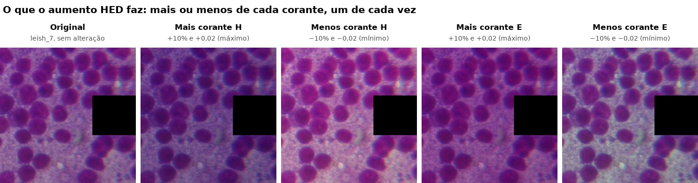
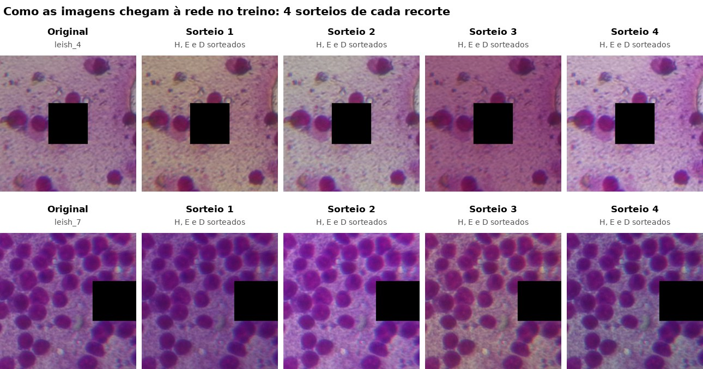
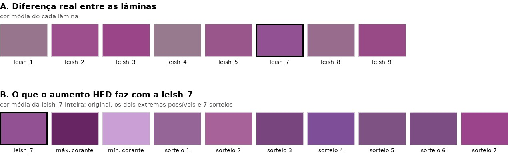

exp12 — YOLO11n com aumento de cor HED no treino
Objetivo: repetir o exp08 (YOLO11n sobre os recortes com o macrófago mascarado; mAP50 0,485 ± 0,109) mudando um único fator: o aumento de dados: perturbação de coloração no espaço HED (Tellez et al., 2018) em 80% das imagens de treino, com fator U(0,9; 1,1) e deslocamento U(−0,02; 0,02) por canal.
Hipótese: Em vez de igualar a cor das imagens (exp11), ensinar o modelo a ignorar a cor, mostrando no treino variações parecidas com as que existem entre lâminas. A intensidade foi escolhida visualmente, para não gerar cores irreais. A comparação com as lâminas reais (figura 3, abaixo) mostrou depois que ela cobre a variação do grupo roxo, mas não o tom acinzentado da leish_1 e da leish_4.
O que é a perturbação de coloração no espaço HED
É uma forma de variar a cor das imagens durante o treino imitando o que acontece numa lâmina corada de verdade: a cor muda porque cada lâmina absorveu mais ou menos corante.
O espaço HED
- Uma foto de microscópio é gravada em RGB (vermelho, verde, azul), mas a cor que se vê vem dos corantes que ficaram no tecido.
- A deconvolução de cor (Ruifrok e Johnston, 2001) faz a conta inversa: para cada pixel, estima quanto de cada corante existe ali.
- HED são os três canais dessa conversão: Hematoxilina, Eosina e DAB, os corantes da histologia clássica. Em vez de "quanto vermelho, verde e azul", cada pixel passa a ser "quanto de cada corante". No código, a conversão é feita por
skimage.color.rgb2hedehed2rgb.
A perturbação
- A imagem de treino é convertida de RGB para HED.
- A quantidade de cada corante é sorteada um pouco para cima ou para baixo:
- um fator multiplica o canal (sorteado entre 0,9 e 1,1, ou seja, até 10% a mais ou a menos de corante);
- um deslocamento pequeno é somado (sorteado entre −0,02 e +0,02).
- A imagem volta para RGB. Os pixels pretos (a região do macrófago mascarada) continuam pretos.
O resultado parece a mesma imagem vinda de uma lâmina corada com mais ou menos intensidade. As células, os parasitas e as caixas não mudam de lugar; só muda a "tinta". A perturbação é aplicada em 80% das imagens de treino.
Diferença para o jitter HSV, que já era usado
- O jitter HSV (hsv_h 0.03, hsv_s 0.9, hsv_v 0.6, mantido aqui igual ao exp08) gira o matiz e muda saturação e brilho da imagem inteira. Isso pode gerar cores que nunca aparecem numa lâmina, como esverdeadas ou alaranjadas.
- O HED muda a cor seguindo a lógica dos corantes, e por isso tende a gerar cores plausíveis para uma lâmina corada.
Escolha da intensidade
Foram comparadas três intensidades numa mesma imagem da leish_7: fator ±0,05 / deslocamento ±0,01; ±0,1 / ±0,02; e ±0,2 / ±0,04. A primeira quase não muda a imagem, e a última gera cores irreais (rosa saturado, azul-claro). A intermediária, ±0,1 / ±0,02, foi a escolhida, porque produz variações dentro da faixa observada entre as lâminas. Limitação verificada depois: comparando a cor média da leish_7 inteira depois de cada sorteio com a cor média de cada lâmina real (figura 3), o aumento clareia, escurece e desloca entre roxo e rosa, mas não produz o tom acinzentado da leish_1 e da leish_4. Se o exp12 não der ganho, uma opção é perturbar também a saturação, ou combinar o aumento com a normalização do exp11.
Observações
- Só acontece durante o treino, com um novo sorteio a cada vez que a imagem é carregada. Nenhum arquivo de imagem é alterado, e validação e teste usam as imagens originais.
- O Ultralytics não tem esse aumento. Ele foi inserido no pipeline de treino pelo próprio notebook, substituindo a função
v8_transforms, logo antes do jitter HSV. Um treino curto de teste confirmou que a perturbação é chamada em todas as imagens de treino. A substituição continua valendo depois doclose_mosaic(últimas 10 épocas). - O HED foi criado para H&E, e estas lâminas são coradas com Giemsa, então os canais não correspondem exatamente aos corantes usados. Mesmo assim, as variações geradas ficaram realistas, e por isso o método é usado como aumento de dados genérico. Se o exp12 der ganho, um próximo passo é adaptar a decomposição aos corantes do Giemsa.
- Referência: Tellez et al., 2018, Whole-slide mitosis detection in H&E breast histology using PHH3 as a reference to train distilled stain-invariant convolutional networks, que introduziu essa perturbação ("HED jitter").
Por que partir do exp08: os exp08, exp09 e exp10 mostraram que o modelo não muda o resultado (0,485 a 0,493), e o YOLO11n treina cerca de 5× mais rápido que os modelos large.
| Notebook | exp12_yolo11n_aumento_hed.ipynb |
| Dataset | 02_datasets_derivados/03_recortes_512_sem_macrofago/ (gerado por 01_preprocessamento/03_mascarar_macrofago_nos_recortes.ipynb) |
| Modelo | yolo11n.pt (pré-treinado COCO, 2,6M parâmetros) |
| Hiperparâmetros | imgsz 512, 150 épocas, patience 40, batch 16, AdamW, lr0 5e-4, lrf 0.01, cos_lr, single_cls, seed 42; aumento de dados hsv 0.03/0.9/0.6, degrees 15, flipud 0.5, mixup 0.1; aumento HED (iguais ao exp08, exceto o fator testado) |
| Validação | os mesmos 6 folds por lâmina dos experimentos anteriores, com métricas no teste agregadas por fold e por lâmina |
| Status | concluído em 18 nov. 2026 |
Exemplos das imagens
1. O que cada corante faz

2. Como as imagens chegam à rede no treino

3. A variação gerada é parecida com a diferença entre as lâminas?

O que as figuras mostram, em resumo:
- O aumento deixa a lâmina mais clara ou mais escura e a desloca entre roxo e rosa.
- Isso cobre a variação do grupo roxo (leish_2, 3, 5, 7 e 9) e se aproxima da leish_8.
- Não reproduz o tom acinzentado e desbotado da leish_1 e da leish_4, que são justamente duas das lâminas mais difíceis. O exp11 (normalização de cor) ataca exatamente essa diferença.
Resultado
Conjunto de teste, média ± desvio padrão nos 6 folds, comparado com o exp08 (a base). Diferenças menores que 0,03 estão dentro do ruído.
| Métrica | exp12 | exp08 (base) | Δ |
|---|---|---|---|
| Precisão | 0,514 ± 0,110 | 0,508 ± 0,102 | +0,006 |
| Recall | 0,555 ± 0,075 | 0,547 ± 0,074 | +0,008 |
| mAP50 | 0,496 ± 0,124 | 0,485 ± 0,109 | +0,011 |
| mAP50-95 | 0,190 ± 0,042 | 0,184 ± 0,039 | +0,006 |
Conclusão
- mAP50 0,496 ± 0,124, +0,011 em relação ao exp08. É a maior média da série, mas ainda dentro do ruído. Foi melhor em 4 dos 6 folds.
- Melhorou a leish_1 (+0,047) e a leish_7 (0,688). Piorou a leish_2 (−0,052) e a leish_4 (−0,020).
- A piora na leish_4 é coerente com a limitação vista nas figuras: nesta intensidade, o aumento não gera o tom acinzentado dessa lâmina.
- Conclusão: ganho pequeno e não conclusivo. Próximos testes possíveis: intensidade maior, perturbar também a saturação, ou combinar com a normalização do exp11.
Por fold
| Fold | Lâminas de teste | Épocas (melhor) | P | R | mAP50 | mAP50-95 | Δ mAP50 vs exp08 |
|---|---|---|---|---|---|---|---|
| 1 | leish_3, leish_5 | 109/69 | 0,565 | 0,591 | 0,556 | 0,191 | +0,022 |
| 2 | leish_2, leish_7 | 134/94 | 0,603 | 0,625 | 0,607 | 0,229 | +0,033 |
| 3 | leish_1, leish_8 | 134/94 | 0,414 | 0,459 | 0,359 | 0,147 | +0,006 |
| 4 | leish_4, leish_9 | 113/73 | 0,467 | 0,586 | 0,470 | 0,197 | −0,006 |
| 5 | leish_1, leish_7 | 99/23 | 0,654 | 0,611 | 0,636 | 0,240 | +0,025 |
| 6 | leish_2, leish_8 | 145/105 | 0,379 | 0,460 | 0,349 | 0,137 | −0,011 |
mAP50 por lâmina
| Lâmina | Folds | exp08 | exp12 | Δ |
|---|---|---|---|---|
| leish_1 | 3, 5 | 0,525 | 0,572 | +0,047 |
| leish_2 | 2, 6 | 0,399 | 0,347 | −0,052 |
| leish_3 | 1 | 0,359 | 0,316 | −0,043 |
| leish_4 | 4 | 0,184 | 0,164 | −0,020 |
| leish_5 | 1 | 0,536 | 0,560 | +0,024 |
| leish_7 | 2, 5 | 0,672 | 0,688 | +0,016 |
| leish_8 | 3, 6 | 0,359 | 0,355 | −0,004 |
| leish_9 | 4 | 0,590 | 0,575 | −0,015 |
Histórico
- 18 nov. 2026: criado a partir do plano de melhorias baseado nos exp01–exp10, e lançado na fila
executar_fila.sh(exp11 → exp12 → exp13 → exp14). - 18 nov. 2026: execução concluída nos 6 folds; resultados registrados.